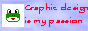
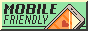

you seem to have found my website
pretty cool, huh? i sure think so
eventually there might be more stuff
click some of those things up there
get in touch if you want to :)
or don't idk im not your mom
hi :) im zoe
i love computers and the internet and lots of other things
this is my lil home on the world wide web
i've been doing stuff like this my whole life
when i was 5 i got a book on html and im still trash at it
i use nixos on my personal laptop because im silly
that list of things i like pretty much explains things
this is just a static html site with a lil bit of css
plus a dash of javascript, and of course angel.png
all of which was written / created by yours truly :)
no frameworks, generators, content management systems, etc.
mobile-friendly, compatible with a wide range of browsers
and should be compliant with modern web accessibility standards?
renders fine in as little as 167x258 pixels! pretty cool
i do some 3d printing stuff
recently i started a tumblr blog
check out neocities if you think this is cool
the source code for this site is on github
and of course w3schools for any web programming reference
the wonderful insect.christmas is a perpetual inspiration
those badges down there are mostly from seirdy.one's neat collection
zoe ♥
that's what my page is for tho
i love talking to new people, so feel free to get in touch if you have more questions
mostly because i want to
but also because ive always been enamored with this kind of like
angelfire / geocities type website ever since i was a little kid
just sort of fucked around in a code editor with w3schools open
but also ive done this kind of thing before a bunch of times over the years
ive loved the idea of starting a blog since i was a little kid but never stuck with it
and i just decided i would start from scratch with a loose html file and see what happened
of course!!
i recommend anyone start with neocities its free and very cool
you do not need ur own website or any experience to get started doing this!
they have plenty of resources and a tutorial to get you started
neocities itself is a community and makes it easy to discover other people with personal sites
but there also appear to be communities on tumblr and other social media around this
or check my page for more
_
(\o/)
/_\